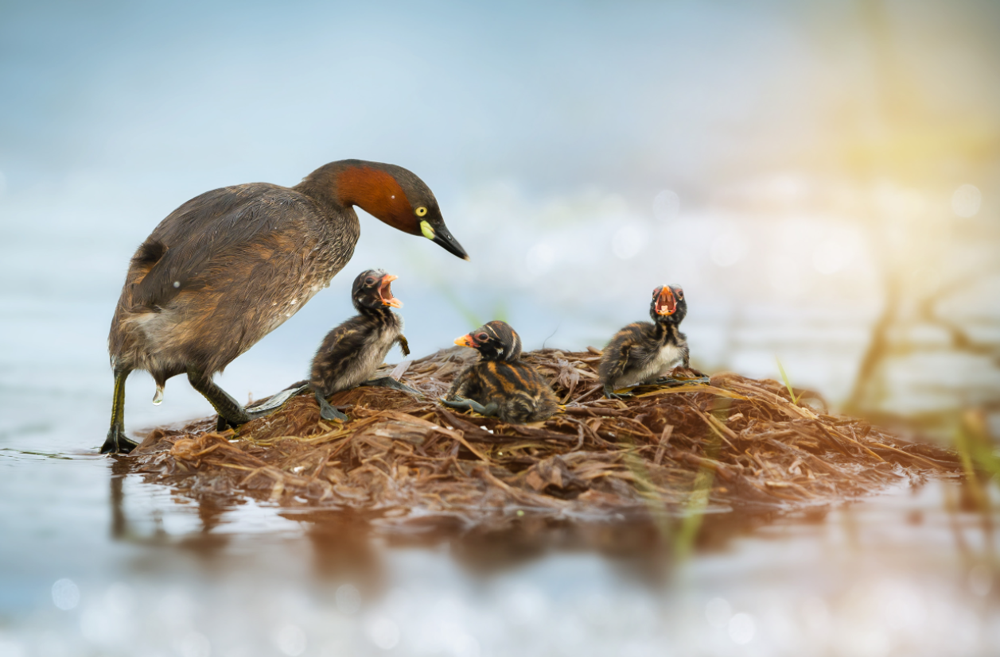

Welcome! You can search for wiki articles by entering a query!
 {% if num_matches%}SEARCH MODE: {{search_mode}}
{{num_matches}} matching document(s) found (max. 10 of them will be displayed below):
| Article # | Content |
|---|---|
| {{ loop.index }} | {{ content }}... |
Sorry, we didn't find any matching documents :(
{% endif %}